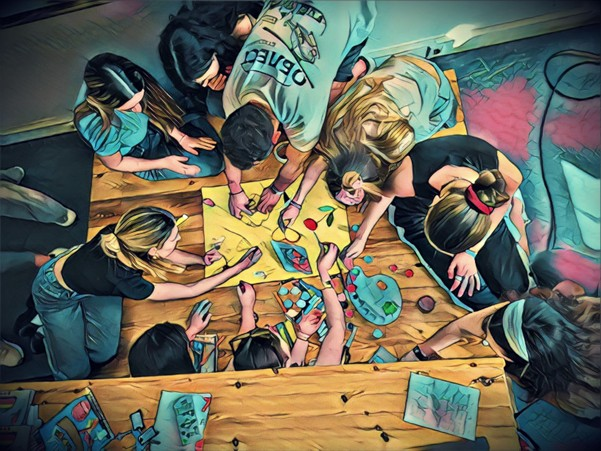
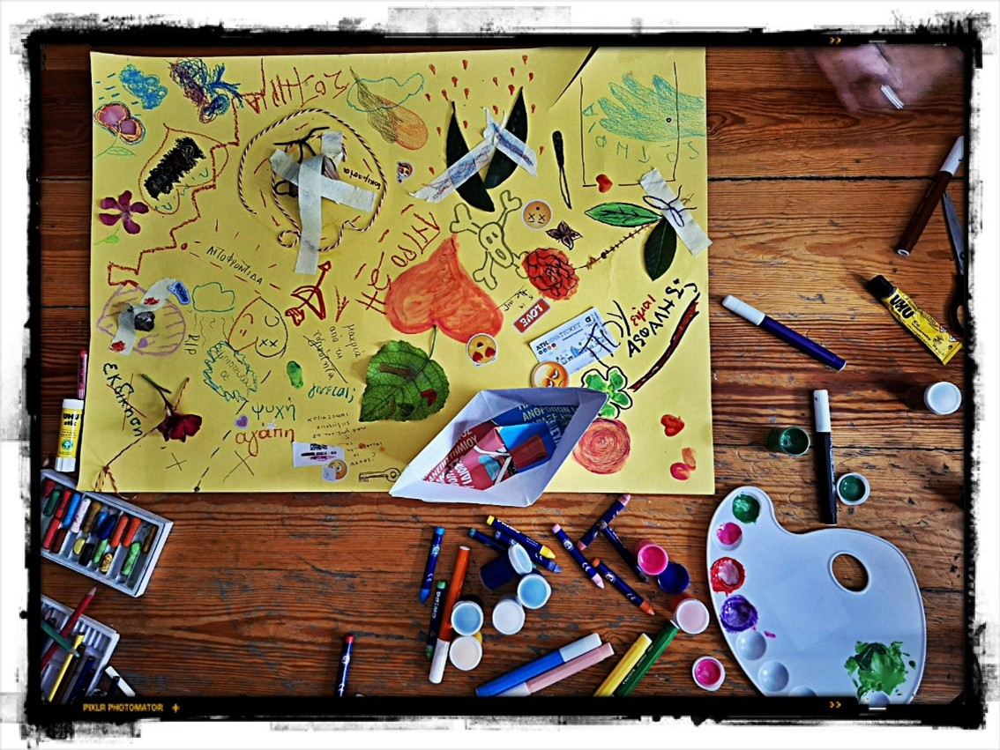

Teaching

My teaching focuses on qualitative research methodologies in psychology, with an emphasis on participatory, creative, and ethically grounded approaches to studying and engaging with individuals, groups, and communities. Across my courses, I aim to cultivate students’ critical thinking, methodological reflexivity, and practical research skills through experiential, collaborative, and process-oriented learning.
I teach an introductory course in qualitative research that familiarizes students with the philosophical foundations, major traditions, and analytical techniques of qualitative inquiry. Through a combination of lectures, hands-on activities, and supervised practice, students engage with the full research cycle, from data collection to analysis and the communication of findings, developing a learning experience that mirrors the work of a qualitative researcher in psychology.
Building on this foundation, my advanced course on creative, participatory, and multimodal methods introduces students to innovative research and intervention practices such as digital storytelling, appreciative inquiry, arts-based and performance-based methods, photovoice, collaborative artifact creation, and dialogical approaches. Students learn how these methods can enrich empirical work with communities and groups, producing ethically informed, multimodal data and supporting research as a democratic and transformative practice. The course highlights post-qualitative and process-oriented perspectives, as well as the role of technology and AI in emerging research frameworks.
I also teach a Qualitative Research Laboratory course, where small student groups participate directly in the design and implementation of a qualitative research project. In this lab, students conduct literature reviews, generate empirical data through multimodal qualitative interviews, analyze their material using qualitative techniques, and produce a full research report, gaining hands-on experience with the methodological, analytic, and ethical demands of qualitative research.

As a supervisor of under- and post-graduate theses, I support students in becoming thoughtful, competent, and reflexive researchers who can navigate complex social realities and contribute meaningfully to psychological knowledge and community-based inquiry.
A published anthology of dissertation theses I supervised can be found in the following peer-reviewed special issue: